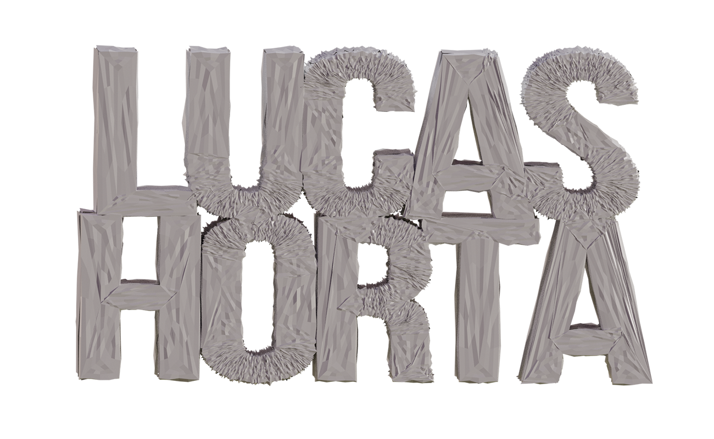

Exploring Live Mo-cap and Unreal Engine
Experimenting with motion capture solutions that link to Unreal Engine
- Utilised Niagra particle effects in Unreal Engine, demonstrated in the attached video.
- Utilized Rokoko Video Mocap AI for precise motion capture.
- Created realistic hair simulation with Blender groom assets in UE5.